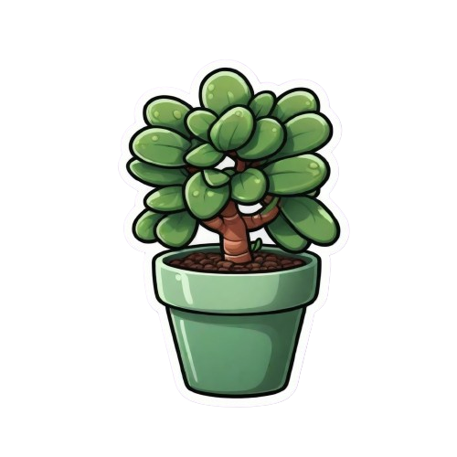

Know about me

Botanical Characteristics:
- It is a succulent with thick, fleshy, oval-shaped leaves that store water.
- The stems are woody, giving the plant a miniature tree-like appearance.
- Mature plants may produce small, star-shaped pink or white flowers.
Varieties:
- Crassula ovata 'Hobbit' – Known for its curled, tubular leaves.
- Crassula ovata 'Gollum' – Features elongated, finger-like leaves.
- Crassula ovata 'Tricolor' – Has green leaves with cream and pink edges.
- Crassula ovata 'Crosby’s Compact' – A dwarf variety with small, reddish-tinged leaves.
Benefits:
- Considered a symbol of good luck, wealth, and prosperity (often called "Money Plant" in some cultures).
- Improves indoor air quality by absorbing CO₂ at night.Adds aesthetic value to homes and offices with its bonsai-like appearance.
- Low-maintenance and ideal for beginners or busy individuals.
Care Instructions:
- Place in bright, indirect sunlight or partial shade.
- Water only when the soil is completely dry to avoid root rot.
- Use well-draining succulent or cactus soil.
- Avoid over-fertilizing; feed lightly during the growing season (spring and summer).